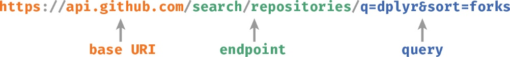
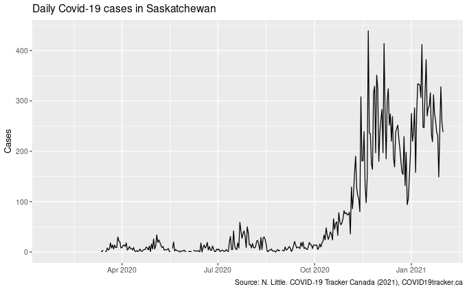

Getting data from the Canada Covid-19 Tracker using R
Last semester (Fall 2020) I taught a new course in healthcare data science for the Johnson Shoyama Graduate School in Public Policy. One of the final topics of the course was querying application programming interfaces (APIs) from within R. The example we used was querying data on the Covid 19 pandemic from the Covid-19 Tracker Canada, which has a simple API that’s easy to work with. In this post I’ll show how we accessed the API from within R and converted the query responses into something we can work with easily.
There are many ways of querying APIs in R via a range of packages. Here, I’m going to use httr 📦 to query the API and jsonlite 📦 to convert what the API responds to our query with into something more useful. The packages we need are listed in the chunk below — if you don’t have them, uncomment the install.packages() line and change Ncpus to something suitble for your computer.
pkgs <- c('httr', 'jsonlite', 'dplyr', 'ggplot2', 'purrr')
## install.packages(pkgs, Ncpus = 4)
vapply(pkgs, library, logical(1), logical.return = TRUE, character.only = TRUE)
httr jsonlite dplyr ggplot2 purrr
TRUE TRUE TRUE TRUE TRUE
The kind of API we’re going to query is a RESTful API — REpresentational State Transfer. To do the query we need identify the resource we want to query and then send the query using HTTP, the HyperText Transfer Protocol. The resource identity is specified using a uniform resource identifier or URI

The URI comprises four parts
- the protocol
- the base URI
- the endpoint
- additional query parameters
For the Covid-19 Tracker Canada, we’ll use the HTTPS protocol for secure HTTP, and its base URI is api.covid19tracker.ca. The endpoint is the specific location of the data you want to access. For the API we’re querying, endpoints include
/reports/cases/fatalities/provinces
Endpoints can also allow multiple sub-resources, these are variables and take the form :var_name. For example, the /reports/province endpoint allows the province to be specified as a sub-resource. It is documented as /reports/province/:code, so we would specify endpoints as /reports/province/SK etc, where we are setting :code to SK.
The final part of the URI are the query parameters and they allow some fine control over what is requested from the endpoint. These are added as key-value pairs, following a ?, and pairs are separated with &. The key is the name of the parameter, and the value is what you want to pass to that parameter. For example, when querying cases, we can specify the province and how many cases are returned per page using
/cases?province=ON&per_page=50Which endpoints and query parameters are supported are documented in the specific API you are trying to access, so always take some time to familiarise yourself with the API itself. For the Covid-19 Tracker Canada the documentation is also at api.covid19tracker.ca.
It’s usually best to build the URI up from these parts stored as separate objects within R
base <- "https://api.covid19tracker.ca"
ep <- "/reports/province/sk"
query <- "?date=2021-01-31"
req <- paste0(base, ep, query)
req
[1] "https://api.covid19tracker.ca/reports/province/sk?date=2021-01-31"
The HTTP request involves using a verb and the URI — here we will use the GET verb. In httr 📦 the GET verb is found in the GET() function
response <- GET(req)The response consists of two parts
- the headers
- the body
The headers contain information about the request and response, while the body contains the result of the query. You can access these components of the response using headers() and content() respectively.
When you print response you’ll see a brief summary of the response metadata
response
Response [https://api.covid19tracker.ca/reports/province/sk?date=2021-01-31]
Date: 2021-01-31 22:42
Status: 200
Content-Type: application/json
Size: 488 B
The status code is important; 200 means success and anything else likely indicates some form of failure. Keep an I on the status code of your queries. If you’re wrapping these codes in a function, the warn_for_status() and stop_for_status() functions to query the status and which throw a warning or an error if the request failed respectively.
The body of the response can be accessed as a generic R list, as the raw bytes of the response, or as plain text. When viewed as text, we see that the text format is JSON
jsonlite::prettify(content(response, 'text', encoding = 'UTF-8'))
{
"province": "sk",
"data": [
{
"date": "2021-01-31",
"change_cases": 238,
"change_fatalities": 4,
"change_tests": 2459,
"change_hospitalizations": -3,
"change_criticals": 3,
"change_recoveries": 223,
"change_vaccinations": 120,
"change_vaccines_distributed": 0,
"change_vaccinated": 0,
"total_cases": 23863,
"total_fatalities": 304,
"total_tests": 508638,
"total_hospitalizations": 203,
"total_criticals": 31,
"total_recoveries": 21026,
"total_vaccinations": 35359,
"total_vaccines_distributed": 32725,
"total_vaccinated": 4637
}
]
}
Above, I used the prettify() function to display the JSON in a human-readable format. Note also that I’m specifying the encoding explicitly to be UTF-8 as that’s what my Linux system uses. If you’re not sure about the encoding for your system, just leave the encoding argument off and you’ll see a message indicating what encoding was used.
To actually parse the JSON into a similar R object we use jsonlite::fromJSON()
parsed <- fromJSON(content(response, 'text', encoding = 'UTF-8'))
str(parsed)
List of 2
$ province: chr "sk"
$ data :'data.frame': 1 obs. of 19 variables:
..$ date : chr "2021-01-31"
..$ change_cases : int 238
..$ change_fatalities : int 4
..$ change_tests : int 2459
..$ change_hospitalizations : int -3
..$ change_criticals : int 3
..$ change_recoveries : int 223
..$ change_vaccinations : int 120
..$ change_vaccines_distributed: int 0
..$ change_vaccinated : int 0
..$ total_cases : int 23863
..$ total_fatalities : int 304
..$ total_tests : int 508638
..$ total_hospitalizations : int 203
..$ total_criticals : int 31
..$ total_recoveries : int 21026
..$ total_vaccinations : int 35359
..$ total_vaccines_distributed : int 32725
..$ total_vaccinated : int 4637
What we’re most interested in is the $data component, but you can see that jsonlite 📦 has converted the JSON to an R list and where appropriate has converted arrays to data frames, as for $data here. Exactly what is returned by the API will be specific to each API, so read the docmentation for the API you want and look at the structure of what is returned to identify the names of relevant components etc.
Covid-19 cases per day
Now that we’ve had a crash course in querying an API, let’s do something substantive and query the Covid-19 case data for my adopted home province of Saskatchewan. For this we want the /reports endpoint and we can specify the province as a sub-resource.
base <- 'https://api.covid19tracker.ca'
ep <- '/reports/province/sk'
req <- paste0(base, ep)
response <- GET(req)
cases <- response %>%
content(as = 'text', encoding = 'UTF-8') %>%
fromJSON() %>%
pluck('data') %>%
as_tibble()
cases
# A tibble: 373 x 19
date change_cases change_fataliti… change_tests change_hospital…
<chr> <int> <int> <int> <int>
1 2020… NA NA 0 0
2 2020… NA NA 0 0
3 2020… NA NA 0 0
4 2020… NA NA 0 0
5 2020… NA NA 0 0
6 2020… NA NA 0 0
7 2020… NA NA 0 0
8 2020… NA NA 0 0
9 2020… NA NA 0 0
10 2020… NA NA 0 0
# … with 363 more rows, and 14 more variables: change_criticals <int>,
# change_recoveries <int>, change_vaccinations <int>,
# change_vaccines_distributed <int>, change_vaccinated <int>,
# total_cases <int>, total_fatalities <int>, total_tests <int>,
# total_hospitalizations <int>, total_criticals <int>,
# total_recoveries <int>, total_vaccinations <int>,
# total_vaccines_distributed <int>, total_vaccinated <int>
At the moment the date variable is stored as a simple character vector. If we convert that to a 'Date' object, ggplot2 📦 will draw a nicely formatted time axis for us
cases %>%
mutate(date = as.Date(date)) %>%
ggplot(aes(x = date, y = change_cases)) +
geom_line() +
labs(x = NULL, y = 'Cases',
title = 'Daily Covid-19 cases in Saskatchewan',
caption = 'Source: N. Little. COVID-19 Tracker Canada (2021), COVID19tracker.ca')
Warning: Removed 47 row(s) containing missing values (geom_path).

Yeah, we’re not doing very well in this province 😞🤬
Hope you enjoyed the post — if you have comments or questions, ask them in the Comment section below.